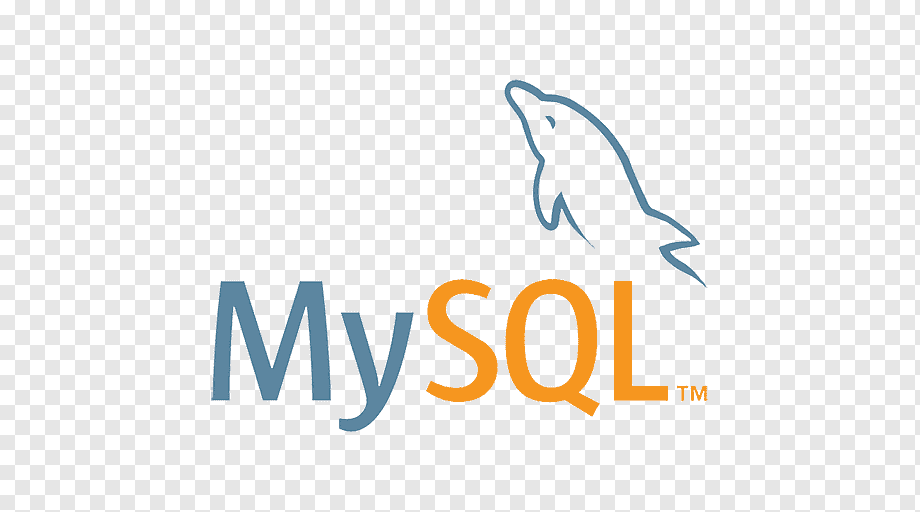
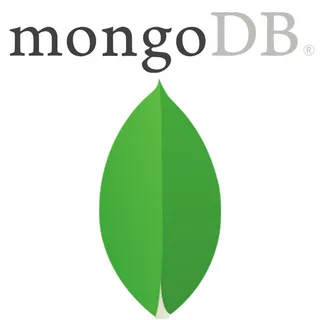

SQL 
- SQL (Structured Query Language) был разработан в IBM в 1970-х годах.
- SQL используется для управления и обработки данных в реляционных базах данных.
- SQL имеет стандартизированный синтаксис, но существуют различия в его реализации между разными СУБД.
MySQL 
- MySQL был создан шведской компанией MySQL AB и выпущен в 1995 году.
- MySQL является одной из самых популярных открытых реляционных СУБД.
- MySQL поддерживает множество различных типов данных, включая числа, строки, даты и времена.
MongoDB 
- MongoDB является документ-ориентированной NoSQL базой данных.
- MongoDB использует BSON (Binary JSON) формат для хранения данных.
- MongoDB позволяет гибко масштабировать базу данных по горизонтали за счет шардинга.
PostgreSQL
- PostgreSQL, также известный как Postgres, был создан в 1986 году и является одной из самых старых открытых реляционных СУБД.
- PostgreSQL поддерживает расширяемость через хранимые процедуры, триггеры, пользовательские типы данных и другие механизмы.
- PostgreSQL активно развивается сообществом разработчиков и регулярно выпускает новые версии с улучшениями и новыми возможностями.